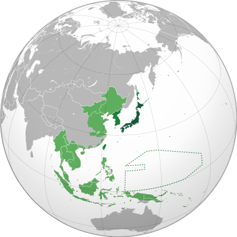

The Attack on Pearl Harbor
| Home - Home | Intro - Intro |
The Arizona - The Arizona |
Pearl Harbor After Math - Pearl Harbor After Math |
Why?
Understanding why the Japanese needed to attack pearl harbor is imperative to seeing why they took such a gambit on that day.
The Empire of Japan at the time was under going expansion to gain more resources to fun their growing war machine.
In a war with China and running out of land to take the Japanese had to look south towards the American controlled Philipines and allied colonies.
The colonies were rich with resources that the Japanese desperately needed. Some resources include:
- Oil
- Natural Gas
- Coal
- Iron
- Copper
As you can guess all of these resources are important not just for the military but to run the country making the Japanese desperate for such resources.

The Japanese Empire at it's greatest extent.
With Japan in need of these resources it is clear why they would take such desperate actions like striking the US to give them free reign over the Pacific.
Why Strike Pearl Harbor?/ The Attack
Pearl Harbor not only station the US pacific fleet but also the facilities needed to maintain and equip it.
The Japanese targeted fuel stations, ships and repair bays unfortunately for the Japanese their pilots often went after battleships instead of more important targets to cripple the fleet.
Even less fortunate for 2,008 sailors that were aboard these ships they would never again see their families or their friends fated to die in a surprise attack.
One ship the USS Arizona was a focus of the Japanese as it was the biggest class of ship present at Pearl Harbor the battleship was struck by one armor piercing bomb that penetrated the deck and blew up a magazine it and it's crew would sink to the bottom of the harbor some even living inside it days after it sunk.
Today it sits below a memorial meant for those who lost their lives during the strike.
Pearl Harbor | Home - Home |
Intro - Intro |
Attack On Pearl Harbor - Attack On Pearl Harbor | The Arizona - The Arizona |
Pearl Harbor After Math - Pearl Harbor After Math |
All images and info gathered from Wikipedia.
Donate to veterans charities here - DAV